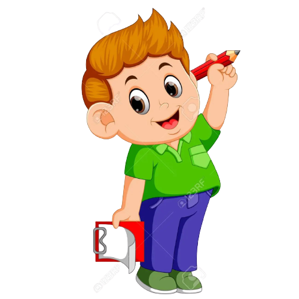
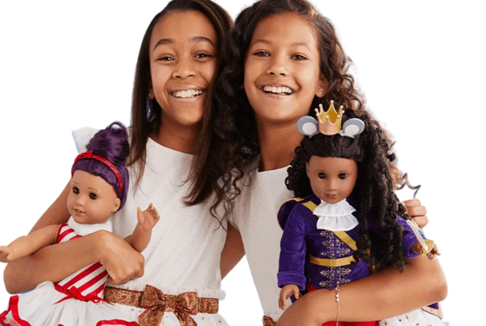

POSSESSIVE NOUNS (THE APOSTROPHE)
Look at the pictures.Read the sentences.
1. The boy's pencil is short.

2. The girls' dolls are cute.

3. The men's hats are white.

The words boy's, girls and men's are called
possessive nouns.
In picture 1, an apostrophe and s ('s) are added to a
singular noun (boy) to show that the pencil belongs to the boy.
In picture 2, an apostrophe (') is added at the end of a
plural noun (girls) to show that the dolls belong to the girls.
In picture 3, an apostrophe and s ('s) are added to a
plural noun that does not end in `s` men to show that the
hats belong to the men.
- A possessive noun shows possession.
- A possessive noun is formed by adding
-
an apostrophe and s('s) to the singular noun or a
plural noun that does not end in 's',
- an apostrophe (') at he end of a plural noun.
More examples:
- The monkey's tail is long. (singular)
- This is a dog's collar. (singular)
- The teacher's umbrella is wet. (singular)
-
These are the children's toys. (plural)
- Those are the farmer's chickens. (singular)
- The pupils' bags are heavy. (plural)
-
The women's hats are red. (plural)
- The nurses' uniforms are white. (plural)
-
The workmen's shirts are dirty. (plural)
- That is my father's car. (singular)
- It is Mary's bag. (singular)
- We had a week's vacation. (singular)
- Most of the passengers' seats were taken. (plural)
- The waitresses' uniforms are smart. (plural)
- Those clowns' constumes are very silly. (plural)